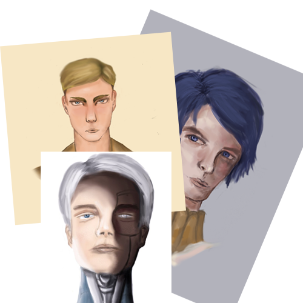

música
Um dos projetos que mais me moldou foi participar da banda da escola. Eu sempre fui apaixonado por música, e logo cedo comecei a aprender violão sozinho. Porém, acabei juntando um dinheiro e comprando um teclado usado (que tenho até hoje!) e passei a aprender músicas nele, sozinho também. Entrar em uma banda me ensinou muito sobre trabalho em equipe e me mostrou como é legal colocar seus projetos de equipe em prática. Ao lado, coloquei um vídeo meu tocando com a banda na USP de Ribeirão Preto (eu sou o cara com o cabelo legal hehe). Antes de dar play no vídeo, peço perdão pelos milhões de erros que cometi nessa apresentação.

arte
Também sempre curti muito desenho e artes visuais no geral. Gostava muito das aulas de artes, desde as aulas práticas às teóricas, e por muito tempo de minha vida minha professora de artes foi uma de minhas melhores amigas. A partir do momento em que comecei a procurar artes de meus jogos e animes favoritos (alô, deviantart), passei a curtir muito arte digital e começar meus próprios desenhos no photoshop, vendo tutoriais e guias na internet. Coloquei ao lado algumas artes digitais que fiz há bastante tempo mas que tem espaço especial no meu coração.
seu loser! por que faz um curso de exatas então?
Essa é uma questão bem doida, então achei importante colocar aqui. Meu pai é matemático e minha mãe contadora, portanto é provável que meu DNA não tem letras, e sim números. Sempre curti muito matemática e considerei fazer bacharel em matemática por bastante tempo de minha vida, mas aí me apaixonei por física também e quis algo que juntasse criatividade, física e matemática. Melhor resposta que engenharia de computação? Espero que não, hehe. Além disso, eu acredito que programar é arte e deixo esse TED talk pra não dizerem que eu só eu penso estranho.
onde está rafael brant agora?
Na USP, yay! Entrei no curso de Engenharia de Computação esse ano e tô curtindo bastante. Na secretaria acadêmica do meu curso, faço algo que sempre gostei: design no photoshop (inclusive, entrando em nossa página você provavelmente verá várias artes que fiz). Além disso, sinto que estou no curso certo: gosto das matérias e vejo muitas possibilidades de crescimento na área, sendo uma delas o ICMC Jr.
obrigado pela atenção!